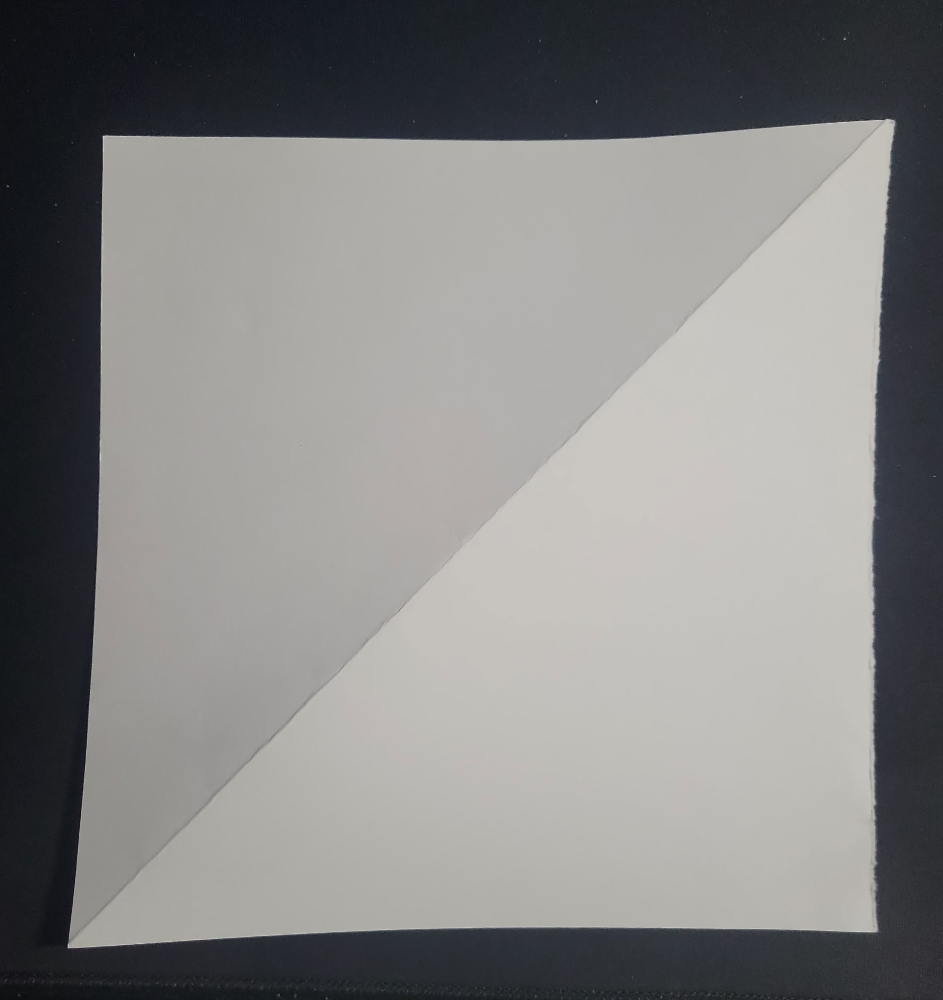
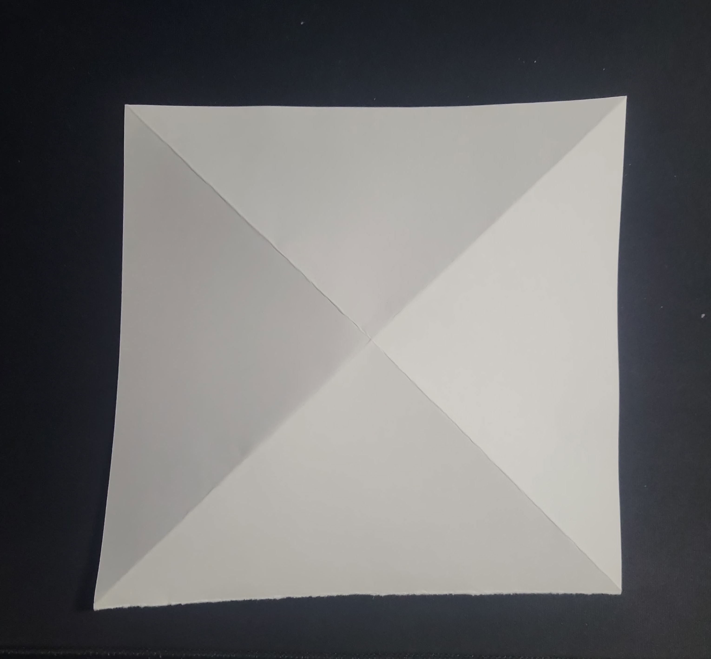
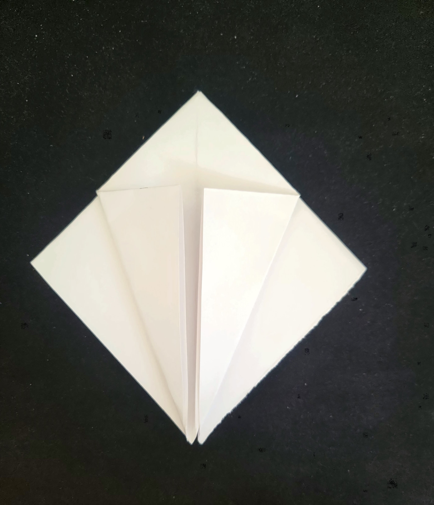
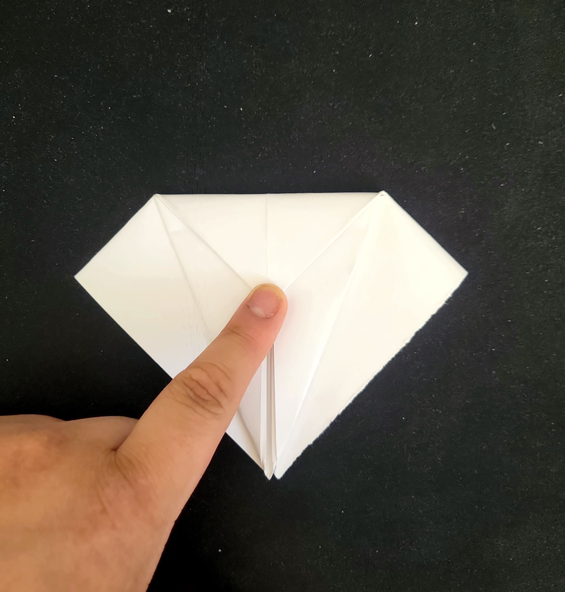
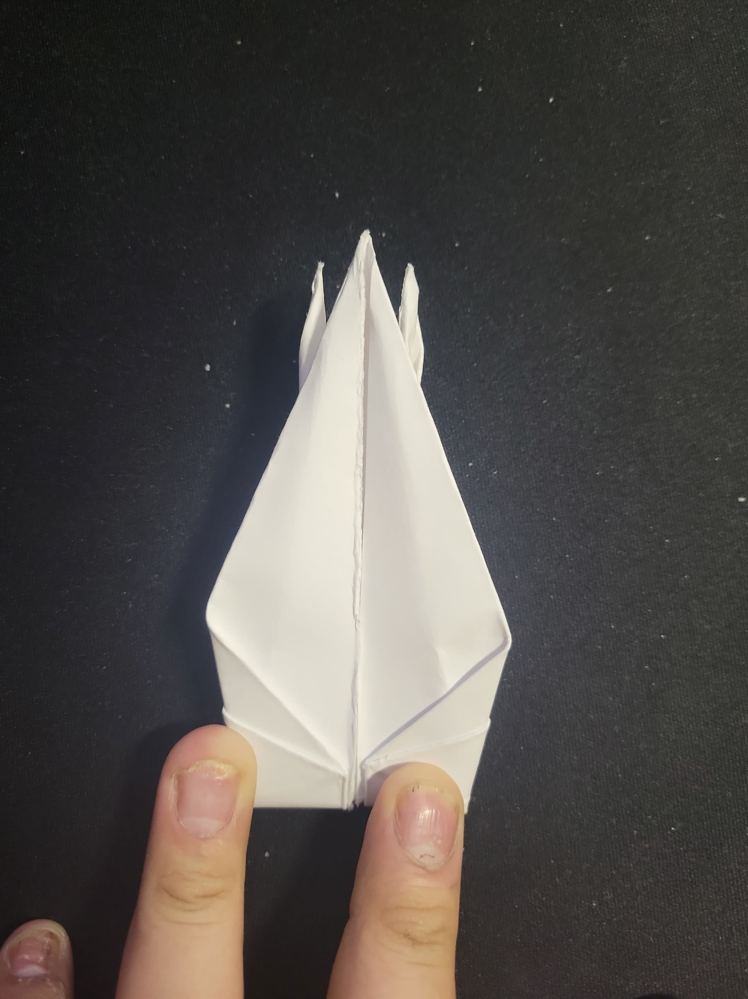
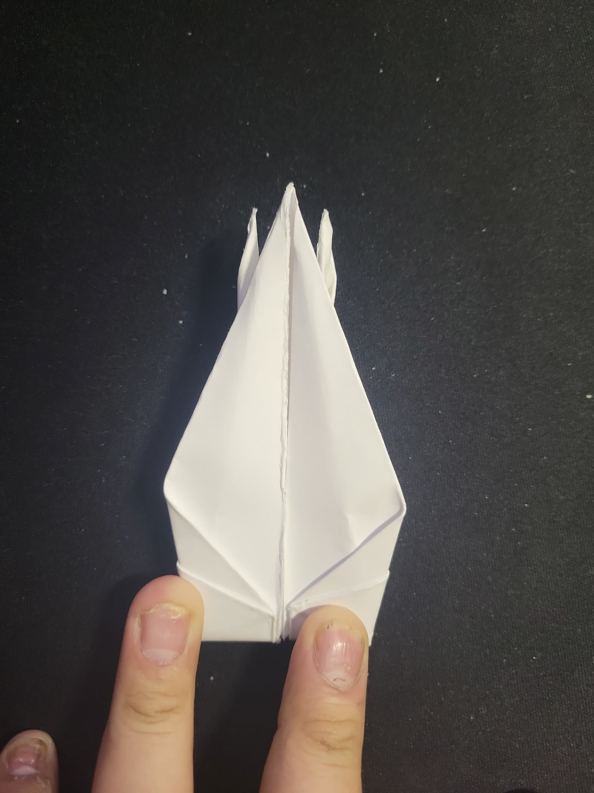

Step 1: Get a square piece of paper
+Make sure the paper is square. You can use origami paper or cut a regular piece of paper into a square shape.
Step 2: X Fold
+Fold the paper in half diagonally both ways to create an X fold.
Step 3: + Fold
+Open it up and fold the paper in half horizontally and vertically to create a + fold.

Step 4: Squash it down
+Using the creases you just made, fold the paper into a square base by bringing the corners together and flattening it down.
Step 5: Shape it into a kite
+Fold the flaps of the square base into the center line to create kite shapes on both sides.
Step 6: Top Flap crease
+Fold the top layer of the kite shape down to create a triangle.
Step 7: Repeat the process
+Repeat steps 5 and 6 on the other side of the paper to create a symmetrical kite shape.
Step 8: Frog mouth to Diamond
+Now with the creases made in step 5, open it up to the point of the crease made in 6 and fold the flaps in to the middle. Repeat on the other side.
Step 9: Skinny kite fold
+With the diamond shape, create a skinny kite fold by folding the outside corners in the flap into the middle. Repeat on the other side.
Step 10: Wolf head fold
+With the skinny kite shape, reverse the flaps to make it look like a wolf head with long nose and ears.
Step 11: Crown fold
+Fold the nose flap up to the same height of the ears. Repeat on both sides.
Step 12: Book fold
+Similar to step 11, inverse the folds.
 

Step 13: Tail + Head fold
+Pull the flaps that were folded up to match parallel to the base and one end crease and fold down a quarter down to create the head.
Step 14: Wing fold
+Fold down the remaining flaps to create the wings of the crane.
Step 15: Puff it up
+Gently pull from the base of the crane's (opposite legs) to puff it up. Now you have a completed paper crane!